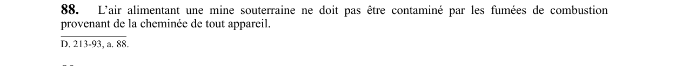

art-88-RSSM : air alimentation sans fumées combustion
Un article du wiki ⚖️ Recueil législatif
En bref
L'air alimentant une mine souterraine ne doit pas être contaminé par les fumées de combustion provenant de la cheminée de tout appareil. Cette obligation vise l'employeur.
- Fumées provenant de la cheminée de tout appareil.
🌐 LegisQuébec · 📄 PDF officiel
Texte officiel : capture du PDF

Toucher l'image pour l'agrandir🔗 Voir art. 88 RSSM dans le PDF (page 36)
Version : texte officiel du RSSM (RLRQ c. S-2.1, r. 14), à jour au 1er mai 2024 — Éditeur officiel du Québec
Voir aussi
- art. 86 : ventilation mécanique obligatoire · obligation : la ventilation d'une mine souterraine doit être faite mécaniquement.
- art. 87 : air frais non contaminé chauffage · interdiction : l'air frais introduit sous terre ne doit pas être contaminé par l'air préalablement évacué ni par toute source fixe de contamination ; si le chauffage direct par flamme est utilisé, l'installation doit être conforme à la norme CGA/CAN1-3.7-1977 et aux codes de gaz applicables.
- art. 89 : interdiction recirculation air ventilateur · interdiction : un ventilateur principal ou secondaire ne doit pas faire recirculer l'air pour ventiler un poste de travail souterrain ; la réutilisation de l'air est permise si la concentration de CO est mesurée à l'entrée de chaque circuit au moins une fois par semaine lors de marinage.
- art. 90 : prise air ventilateur secondaire recirculation · obligation : la prise d'air d'un ventilateur secondaire doit être placée de façon à ne pas réintroduire de l'air préalablement évacué de la zone qu'il dessert.
- ⚖️ Loi habilitante : LSST
- ↑ Index du bloc : Aménagement du chantier
Pages qui pointent ici (5)
- art-86-RSSM : ventilation mécanique obligatoire Recueil législatif
- art-87-RSSM : air frais non contaminé chauffage Recueil législatif
- art-89-RSSM : interdiction recirculation air ventilateur Recueil législatif
- art-90-RSSM : prise air ventilateur secondaire recirculation Recueil législatif
- RSSM : Aménagement du chantier (art. 12 à 99) Recueil législatif